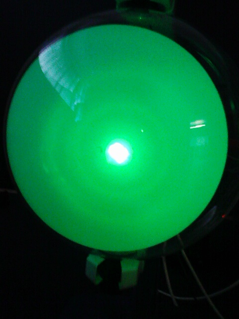
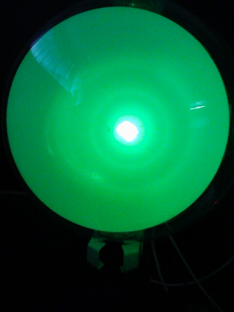
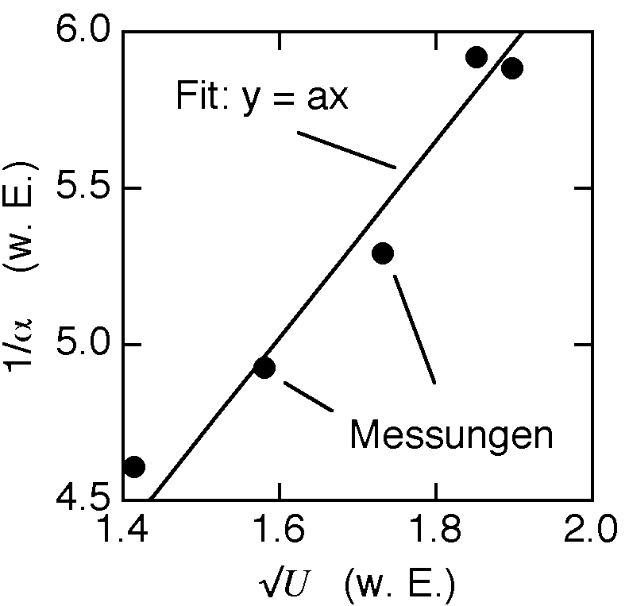

Elektronenbeugung
Elektronen haben Welleneigenschaften. In einem Schulexperiment werden Elektronen auf mikroskopisch kleine Strukturen geschossen, dann wird das Beugungsmuster auf einem Leuchtschirm sichtbar gemacht (Abb. 1 und 2). Man sieht deutlich, dass die Beugungswinkel von der Beschleunigungsspannung abhängen:
|  |
 |
| Abb. 1: U = 2.5 kV |
Abb. 2: U = 3.6 kV |
Der Sinus des Beugungswinkel sollte umgekehrt proportional zum Impuls resp. zur Wurzel aus der Beschleunigungsspannung sein, falls die Theorie von de Broglie stimmt.
Bei kleinen Winkeln ist der Sinus gleich dem Winkel. Misst man also den Winkel α und stellt dessen Kehrwert als Funktion der Wurzel aus der Beschleungigungsspannung U dar, so sollten die Messwerte auf einer Nullpunktsgeraden liegen. Wie man in Abbildung 3 sehen kann, stimmt dies im Rahmen der (grossen) Fehlerschranken.

Abb. 3: Kehrwert des Beugungswinkels als Funktion der Wurzel aus der Beschleunigungsspannung (willkürlichen Einheiten, Fehlerschranken ca. 10 %). Die eingezeichnete Nullpunktsgerade zeigt, dass die Proportionalität im Rahmen der Fehlerschranken erfüllt ist.
last update: 15. Juli 2007/Lie.
Zum Seitenanfang oder